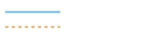

Editorial standards and moderation
Chapter 11 of the specification asks to distinguish fact, hypothesis, opinion and speculation. On this site, that distinction is an interface element, not a matter of tone.

Solid where something has been measured. Dashed where it has only been inferred.
It is the logo, it is the background motif, it is how the diagrams are drawn, and it is the editorial rule. A reader learns the convention from the logo and meets it everywhere else.
The four statuses
- Fact
Established by observation or measurement, and not disputed in the scientific literature.
- Hypothesis
A proposed explanation, consistent with observation, but not yet settled.
- Opinion
The judgement of a named person, presented as such.
- Speculation
Extrapolation beyond what the data support. Published only if it is flagged.
Why the label is text
A stylistic label — a colour, an italic — disappears when the stylesheet fails, when the page is printed, when it is read aloud, and when a search engine quotes an extract. Those four cases are exactly the ones where a claim travels furthest from its context. So the label is text: it survives all four.
What the editorial line rules out
- Sensationalism. Chapter 6 asks for content that is serious and understandable; a headline promising more than the text betrays both.
- A conspiracy register. An unexplained signal is an open question, not a cover-up.
- Fake science. A claim without a source does not become true because it is well written.
- Exaggerated investment promises, and investment promises in general.
- Unflagged speculation. Flagged, it has its place.
The review process
- A report, a startup page or a research article is reviewed before publication.
- The reviewer is named on the page, alongside the author.
- A correction does not silently replace the text: it is dated and visible.
- An item whose status changes — from hypothesis to fact, or the reverse — keeps a record of the change.
What remains to be validated
-
To be validated
The review board
No name, qualification or title will be shown without written agreement and supporting evidence.
-
To be validated
The correction procedure
Who can report an error, within what delay it is handled, and where the correction appears.